We will label as the Basic Fixed-Endpoint Control Problem the optimal control problem from Section 3.3 with the following additional specifications:
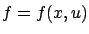
and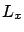
are continuous (in other words, both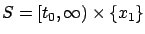
(this is a free-time, fixed-endpoint problem); andMaximum Principle for the Basic Fixed-Endpoint Control Problem Let
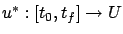
be an optimal control (in the global sense) and let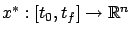
be the corresponding optimal state trajectory. Then there exist a function
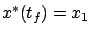
, where the Hamiltonian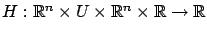
is defined as
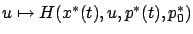
has a global maximum at
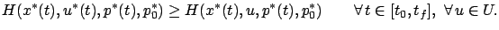
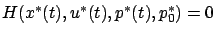
for all
A few clarifications are in order. First, the
maximum principle, as stated here, describes necessary conditions
for global optimality. However, we announced in
Section 3.4.5 that one of our goals is to
capture an appropriate notion of local optimality. The proof of
the maximum principle will make it clear that the same conditions
are indeed necessary for local optimality in the sense outlined in
Section 3.4.5. We thus postpone further
discussion of this issue until after the proof (see
Section 4.3). Second, while the adjoint vector, or
costate,  is already familiar from Section 3.4,
one difference
with the necessary conditions derived using the variational approach
is the presence of
is already familiar from Section 3.4,
one difference
with the necessary conditions derived using the variational approach
is the presence of
 . This nonpositive scalar
is called the abnormal multiplier. Similarly
to the abnormal multiplier
. This nonpositive scalar
is called the abnormal multiplier. Similarly
to the abnormal multiplier
 from Section 2.5,
it equals 0 in degenerate cases; otherwise
from Section 2.5,
it equals 0 in degenerate cases; otherwise
 and we
can recover our earlier definition (3.29) of the
Hamiltonian by normalizing
and we
can recover our earlier definition (3.29) of the
Hamiltonian by normalizing
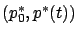
so that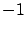
. Finally, in Section 3.4.4 we saw another scenario where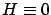
may seem surprising. We will see later (in Section 4.3.1) that this is a special feature of free-time problems. The next exercise provides an early illustration of the usefulness of the above result.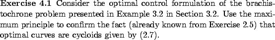
Let us now ask ourselves how
restricted the Basic Fixed-Endpoint Control Problem really is.
Time-independence of  and
and  and the absence of the terminal cost do not really
introduce a loss of generality. Indeed, we know from Section 3.3 that
we can eliminate
and the absence of the terminal cost do not really
introduce a loss of generality. Indeed, we know from Section 3.3 that
we can eliminate  and
and  from the problem formulation by introducing the
extra state variable
from the problem formulation by introducing the
extra state variable
 (although this entails
stronger regularity assumptions on the original right-hand side
as a function of
(although this entails
stronger regularity assumptions on the original right-hand side
as a function of  )
and passing to the new running cost
)
and passing to the new running cost
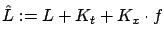
. On the other hand, the target set is not very general, as it does not allow any flexibility in choosing the final state. This motivates us to consider the following refined problem formulation.